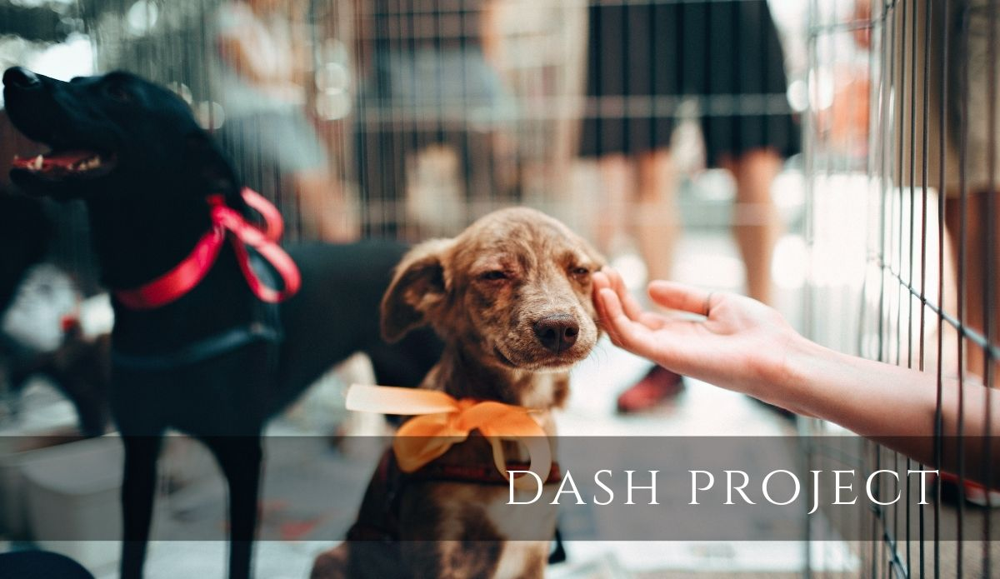
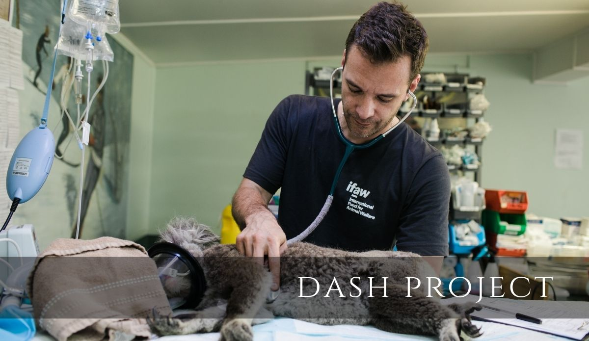

D.A.S.H. Consulting Project
As part of the MIS Databases Class curriculum, Team 6 decided to create D.A.S.H, a Database for Animals in Shelter Housing. This database helps animal shelters to keep track of information about the shelter’s main operations processes in an easy and reliable way.


Project information
- Category: Consulting Projects
- Client: Animal Shelters in the US
- Project date: August 2019 - December 2019
- Team: Elizabeth Haskins, Kiran Hajat, Onintsoa Razafindrasoa
- Role: Project & Scrum Master Manager
- Contribution: Created and maintained the project backlog, build report narratives, and support team members on task execution.
- Technologies: HTML5, C Sharp, Microsoft Azure, SQL, CSS, Agile Development (Scrum)
- Project URL: DASH consulting report